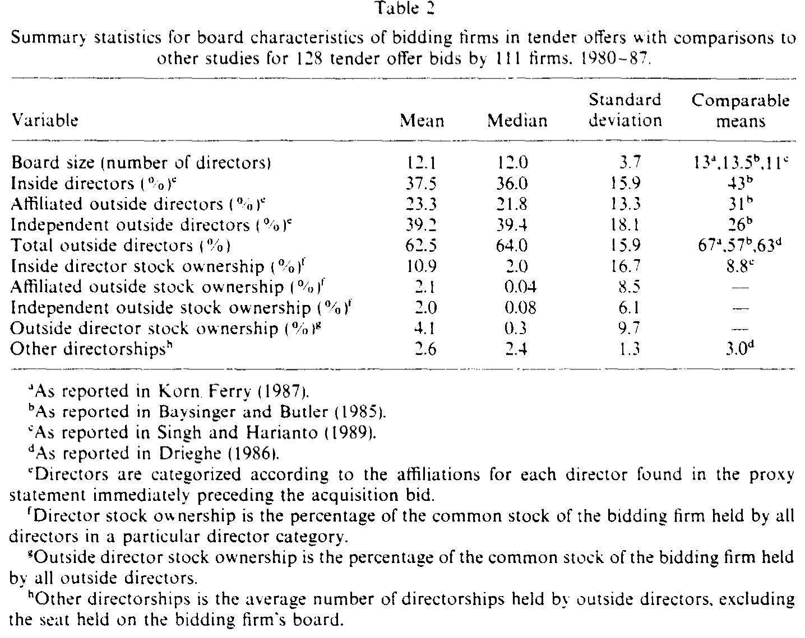
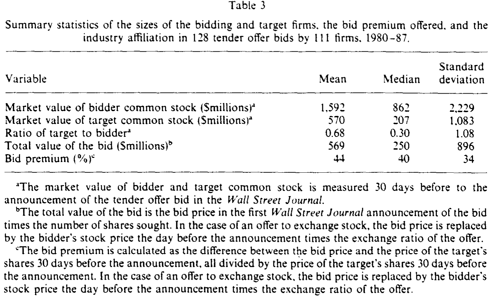
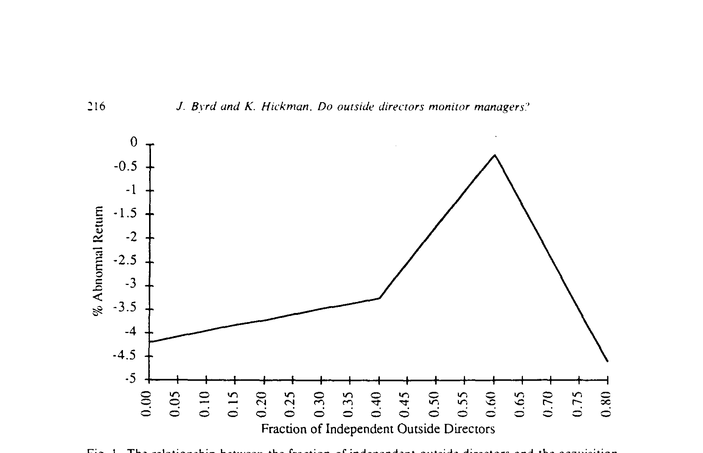
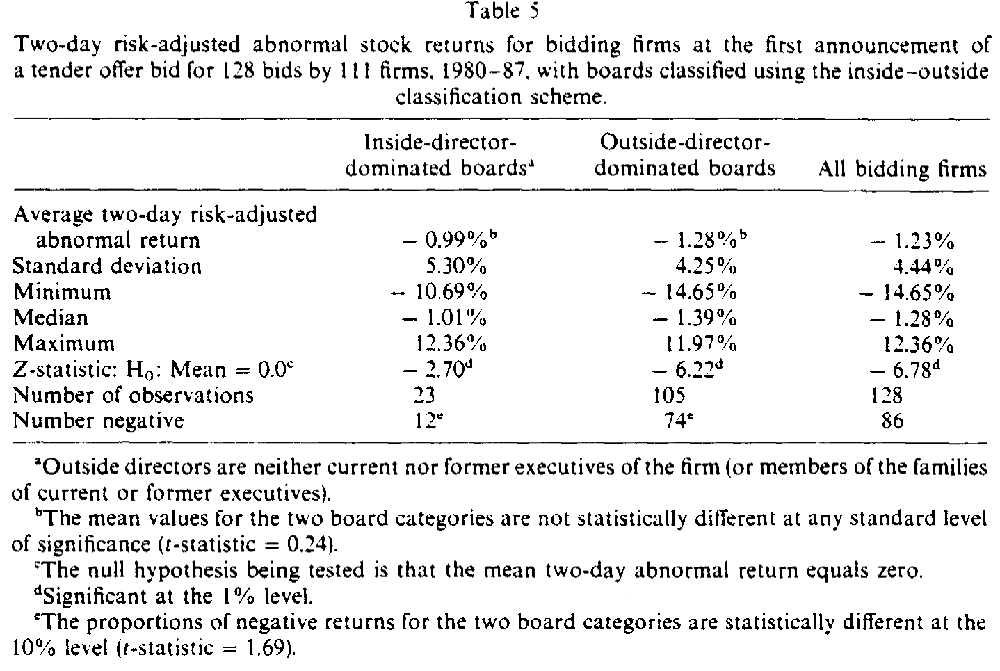
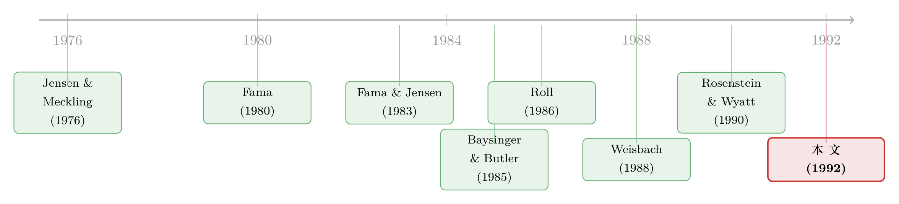

董事会里坐着谁，决定了一次收购值多少钱——但「独立」也会过头
本文读的是 Byrd & Hickman (1992, JFE)：用 1980–1987 年的 128 起要约收购，作者发现当独立外部董事占据董事会半数以上席位时，收购方公告日的异常收益显著「不那么负」——但这层监督的好处并非越多越好，独立董事占比过高时收益反而掉头向下。最关键的是，如果换回教科书里那套「内部—外部」二分法，所有结论都会凭空消失。
1 一个老问题：董事会到底有没有用？
先抛一个几乎所有公司金融教科书都会写、却很少被干净地验证过的问题：外部董事，到底是不是在替股东盯着老板？
这个问题听上去理所当然。董事会在法律上被赋予「批准并监督管理层、考核高管、奖惩业绩」的权力；而在董事会里，那些不在公司领薪水的外部董事，被认为是监督的核心——只有他们才敢问出那些「即便最尽责的管理层也会因为'敝帚自珍'而不愿正视」的难题（Winter 1977 的原话）。这是把外部董事捧上神坛的一派。
但反对的声音同样响亮。怀疑者说：产品市场、要素市场、经理人劳动力市场、公司控制权市场，外加审计、债务、股权结构这些内部治理工具，早就把经理人管得死死的，外部董事不过是叠床架屋。更狠的批评来自 Mace (1986) 和 Patton & Baker (1987)：外部董事是老板自己挑的，看的也是老板递上来的材料，「监督者」从一开始就被「被监督者」捏在手里。
于是问题变得很尖锐：这两派谁对？而要回答它，你需要一个外部董事「必然在场、且必须表态」的场景。
接着，一个自然的问题是：什么决策最能逼董事会现出原形？
答案是要约收购 (tender offer)。收购是会改变公司战略方向的重大投资，董事会几乎不可能置身事外——法律评论甚至直接把「审查管理层提出的收购方案」写成董事的法定职责。更妙的是，已有大量证据表明，收购方的异常收益分布大致以零为中心，正负各半：有的并购替股东创造了价值，有的则在毁灭价值。如果外部董事真有用，那么在「该不该买、出多少价」这件事上，他们的影响应该会直接写进收购方的股价反应里。
这就是 Byrd 和 Hickman 这篇 1992 年 JFE 论文的全部赌注。
2 真正关键的一步：把「外部董事」拆成两种人
然后，问题来了——也是这篇论文最聪明的地方。
过去的研究为什么吵不出结果？作者的判断是：大家用错了分类。
传统做法是把董事一刀切成「内部人（公司雇员）」和「外部人（非雇员）」。可这套二分法藏着一个致命漏洞：很多董事既不是全职雇员，却又和公司有着千丝万缕的利益往来——给公司放过贷款的商业银行家、替公司打官司的律师、公司供应商或客户的高管、相互交叉任职的董事……他们顶着「外部人」的帽子，屁股却坐在管理层那一边。把这些人算作「独立监督力量」，等于在数据里掺了沙子。
于是真正关键的一步是：作者搬来了 Baysinger & Butler (1985) 的三分法，按代理声明书 (proxy statement) 上披露的关联与交易，把董事分成三类：
- 内部董事 (inside directors)：公司高管、退休高管及其家属；
- 关联外部董事 (affiliated outside directors)：非全职雇员，但与公司有业务关联（投行、放贷银行、律师、顾问、上下游高管、交叉董事等）；
- 独立外部董事 (independent outside directors)：除董事席位外与公司毫无瓜葛的人——私人投资者、企业高管、学者、公共部门决策者。
只有第三类，才是董事会里真正的「监督部件」。逻辑很直白：当独立董事占到半数以上，他们就有能力否决一桩坏收购；即便不到半数、没有否决权，多一个独立董事开口质疑，扳倒一个坏方案的概率也多一分。
（顺带一提，「换一把更细的尺子，结论就翻案」这种事在治理研究里反复上演——关于董事独立性如何被「关联」二字搅浑，也可参见《老板的工资条，谁说了算？》。）
把样本中的董事重新归类后，平均一家收购方董事会有 12.1 名董事，其中内部董事占 38%、关联外部董事占 23%、独立外部董事占 39%。如果还用老办法，把董事粗暴地分成「内部/外部」，那么 105 家公司（占样本 82%）的董事会都是「外部人主导」——这个数字大得几乎没有区分度，也正是老分类法失灵的根源。

Table 2
3 识别策略：把监督的好处「钉」在公告日上
研究设计本身不复杂，但每一步都为「干净」服务。
样本是 1980 年 1 月到 1987 年 12 月间登记于 SEC 的要约收购，经过五道筛选——收购方与目标都在 NYSE 或 AMEX 上市、收购方事先未控股目标、《华尔街日报》公告当日前后没有分红变动 / 盈余公告 / 代理权之争等混淆性新闻、CRSP 上有足够长的交易数据、能找到收购前最近一次年会的代理声明书——最终留下 128 起收购、111 家公司，其中 45 起出自「独立董事会」（独立外部董事 ≥ 50%）。
「剔除同期其他新闻」这一条很关键：它保证了公告日两天窗口里的异常收益只能归因于这桩收购，而非别的公司事件。
度量工具是标准的事件研究 (event study)。作者用市场模型（估计期为公告日前第 209 天起的 200 天、用两日连续复利收益、对价值加权指数做 OLS）算出每家公司的市场模型参数 \(\hat{\alpha}_i\) 和 \(\hat{\beta}_i\)，再得到异常收益：
$$AR_{it} = R_{it} - \hat{\alpha}_i - \hat{\beta}_i R_{mt}$$
事件窗口取公告当天（第 0 天）与前一天（第 −1 天）这两日，显著性检验基于一个渐近服从标准正态分布的 Z 统计量（用各公司市场模型的残差方差做标准化）。一切都是当年事件研究的「标准武器」，没有花活——这反而让结论更可信：如果连最朴素的事件研究都能把董事会的影响照出来，那它就很难是某种设定带出来的幻觉。
在正式看结果前，还有两个值得记下的样本事实，它们后面会变成「担忧」：独立董事会的收购方个头更小，追的目标也更小（目标/收购方市值之比 0.44 vs. 非独立董事会的 0.81，t = 2.23）；而且它们出的溢价更低——独立董事会平均溢价 35.5%，非独立董事会 48.6%，差异在 1% 水平上显著（t = 2.47）。换句话说，独立董事会似乎天然就更「抠门」。

Table 3
4 主要结果：少亏，就是赢
现在揭晓那个核心数字。
全样本 128 起收购，收购方两日异常收益平均为 −1.23%，显著为负——这与「并购平均不替收购方赚钱」的既有印象一致。但一旦按董事会类型拆开，画面立刻分裂：
- 非独立董事会（独立董事 < 50%）的收购方：约
−1.86%； - 独立董事会（独立董事 ≥ 50%）的收购方：约
−0.07%，与零无异。
也就是说，有独立董事会把关的收购方，几乎没有在公告日毁灭股东价值；而把关不力的那一批，平均每股缩水近 2%。监督的好处，不是让股东「赚」，而是让股东「少亏」——在一个平均回报为负的游戏里，少亏就是赢。
但真正让这篇论文站住脚的，是接下来的反转。
首先，作者把异常收益对独立董事占比做横截面回归，并且没有假设它是线性的，而是用了分段（piecewise / 样条）回归。结果是一条先升后降的曲线：在大部分取值区间里，独立董事占比越高、收购方收益越好；可一旦独立董事占据了极高比例的席位，斜率掉头变负。如图 1 所示，这个关系呈现出一个驼峰——监督的边际收益先递增、越过某一点后转为递减。这意味着：独立董事可能「太多」。

Figure 1: The relationship between the fraction of independent outside directors and the acquisition
接着，一个自然的怀疑是：会不会是别的东西在驱动？作者把可能影响并购盈利性的变量一股脑塞进回归——董事持股、董事兼任的其他董事席位数、要约条款（现金 / 换股、是否首次出价）、收购方与目标的行业相关性——这条驼峰曲线纹丝不动。
然后是最锋利的一刀。作者把回归里的「独立董事占比」换成「全部外部董事占比」（独立 + 关联一起算），也就是退回到更接近传统的口径。结果：董事会构成与异常收益之间，任何显著关系都不见了。同样，如果直接用「内部—外部」二分法，独立董事会与非独立董事会之间的收益差异也荡然无存。
这一步的分量怎么强调都不过分：它说明,过去那些用「内外二分法」得出「董事会构成无关紧要」的研究，很可能不是因为董事会真的没用，而是因为分类口径把信号稀释掉了。换一把更细的尺子，被埋没的关系才浮出水面。

Table 5
为什么会「太多也不行」？作者借 Baysinger & Butler (1985) 的话给出解释：董事会要干的活不止监督一件——它还需要提供行业专长、战略判断、外部资源。把董事会的座位过度押注在「独立监督」这一项上，会挤掉其他能力，反而削弱董事会的整体效能。于是论文落到一个多面手 (multifaceted) 的董事会观上：好的董事会是一支配置均衡的队伍，而不是一支清一色的「看门狗」。
5 文献脉络
把这篇论文放回它生长的那条线上，故事会更清楚。
最上游是代理理论的两块基石：Jensen & Meckling (1976) 点明了所有权与控制权分离带来的代理成本，Fama (1980) 与 Fama & Jensen (1983) 则把董事会、经理人劳动力市场等一系列机制摆进「控制代理问题」的工具箱里——尤其是 Fama & Jensen 关于「外部董事靠声誉资本来约束自己」的论证，直接成了本文「独立董事有动机监督」的理论支点。（关于这条主线的来龙去脉，可参见《债务这副药，为什么不能全吃？——重读 Jensen 和 Meckling 五十年》。）

往下，分类工具的革新来自 Baysinger & Butler (1985)：正是他们的三分法，给了本文那把「更细的尺子」。与此同时，并购这一侧也在积累证据——Roll (1986) 的「狂妄假说 (hubris hypothesis)」解释了为何收购对收购方常常无利可图，Bradley、Desai & Kim (1988) 和 Jarrell、Brickley & Netter (1988) 则刻画了收购方异常收益「均值近零、正负参半」的分布形态。这两条线交汇，才有了「用并购收益去检验董事会作用」的可能。
最直接的近邻，是三篇刚刚为「外部董事确实在监督」提供证据的论文：Brickley & James (1987) 发现银行业里外部董事能压低经理人的在职消费；Weisbach (1988) 发现外部董事占比越高、业绩糟糕后越可能换掉 CEO；Rosenstein & Wyatt (1990) 则记录到「新增一名外部董事」公告时股价的正反应。Byrd & Hickman (1992) 站在这三篇之后，把「监督」的证据从「换 CEO、砍开支、任命公告」推进到了一桩具体的重大投资决策上——并且第一次同时给出了「监督有用」和「监督会过头」这两个方向。
沿着这条线再往后，董事会研究开始处理独立性的内生性与动态（如董事会规模与构成如何随公司成长而演化，见《董事会不是越大越好，也不是越独立越好》），以及外部董事在更具体情境下的角色（如毒丸采纳，见《董事会里坐着谁，决定了一颗「毒丸」是解药还是毒药》）。
6 评论与延伸（Q&A + 研究方向）
(a) 几个可能的疑问
Q：「独立董事会少亏」会不会只是因为它们本来就更小、出价更低？
这是最该担心的一点，而作者也直面了它。独立董事会的收购方确实更小、追的目标更小（目标/收购方比
0.44vs0.81）、出的溢价更低（35.5%vs48.6%）。但关键在于：把这些变量（相对规模、要约条款、行业相关性等）作为控制变量放进回归后，独立董事占比的那条驼峰曲线依然显著。换句话说，「监督」的解释力是在控制了「抠门」之后额外存在的。当然，这是回归式的控制，不是外生冲击式的识别——见下文担忧。
Q：和「内部—外部」二分法的区别真有那么大吗？会不会是作者挑出来的？
区别大到决定成败。用全部外部董事占比、或用传统二分法，董事会构成与收益的关系完全消失；只有把「关联外部董事」从「独立外部董事」里剥出来，关系才出现。这恰恰是论文的核心贡献：它不是「又一篇说董事会有用的文章」，而是解释了为什么之前那么多文章说董事会没用——口径错了。
Q：「独立董事过多反而有害」是统计假象，还是真有经济含义？
论文给的是相关性证据（图 1 的驼峰、分段回归的负斜率段），机制解释是「董事会需要多样化能力，过度偏重监督会挤掉专长与资源」。这个解释合理但并非被直接检验——它更像是对数据形态的事后诠释，而非独立验证的因果。把它当作一个有待验证的猜想更稳妥。
Q：用 1980 年代的小样本（128 起）下这么强的结论，可靠吗？
样本确实不大，且集中在并购浪潮的特定年代，外推到今天需谨慎（彼时独立董事比例正处于上升趋势中）。不过事件研究的功效不在样本量绝对值，而在信噪比；两日窗口、剔除混淆新闻的设计把噪声压得较低。真正的限制是外部效度而非内部统计功效。
Q：为什么是要约收购，而不是别的公司决策？
因为要约收购满足「董事会必然在场、必须表态、且后果可被市场即时定价」三个条件。换成日常投资或融资决策，董事会的介入程度模糊、市场反应也被其他信息淹没，监督的影子就照不出来了。
Q：独立董事的「监督」会不会其实是「阻挠」——好收购也被否了？
数据无法完全排除。论文的逻辑是：独立董事会让收益从
−1.86%升到约0，方向上是「拦下坏交易」而非「错杀好交易」。但若独立董事系统性地过度保守，我们看到的「少亏」里可能也混入了「少赚」。这正是「过多有害」那一段的另一种可能读法。
(b) 几个可能的研究问题与提案
1. 把「监督」从「抠门」里干净地分开
【经济故事】本文最大的软肋是无法外生地分离「独立董事会更会拦坏交易」与「独立董事会天生更保守、出价更低」。如果能找到一次外生改变董事会独立性的冲击（如交易所上市规则、SOX 后独立性要求的强制提升），就能用 双重差分 (difference-in-differences, DiD) 把监督效应从选择效应里剥出来。 【可行性】中。上市规则变更提供了准自然实验，董事数据可从代理声明书 / BoardEx 获取；难点在于规则往往同时改变多项治理变量，需要细致的处理组构造。
2. 把同一思路搬到债权人身上
【经济故事】独立董事「拦下坏收购」保护的是股东。但收购对债权人的影响方向常常相反（杠杆上升、风险转移）。一个自然的问题是：独立董事会主导的收购，公司债的公告日反应是否也更温和？若是，说明独立董事监督的是「整体价值」而非单纯「股东价值」。 【可行性】中。需要把收购方匹配到 TRACE 之后的债券交易数据（本文样本在 TRACE 之前，故只能用更近期样本重做），董事分类沿用三分法。识别同样受内生性困扰，但「股债反应符号对比」本身就是有信息量的描述性证据。
3. 外资 / 机构持有人会替代还是补强独立董事？
【经济故事】跨国与机构持有人是另一股监督力量。独立董事的边际价值，是否在机构持股高时下降（替代）、还是上升（互补）？这能把本文的「多面手董事会」观推广到「治理机制组合」的层面。 【可行性】高。13F 机构持股、董事分类、并购事件三类数据都成熟可得；可用交互项检验替代/互补，并以指数纳入等外生变动加固识别。
4. 「独立性的最优占比」是否随行业专业性而移动？
【经济故事】图 1 的驼峰若真由「监督 vs. 专长」的权衡驱动，那么在技术越复杂、越依赖行业专长的行业里，最优独立董事占比应当更低（专长董事的边际价值更高）。这是对本文机制的一个可证伪推论。 【可行性】中。用 R&D 强度、专利密度等刻画行业专业性，按行业估计驼峰顶点位置；难点是顶点估计对分段设定敏感，需要稳健性检验。
7 我的判断
这篇论文的贡献，不在于「证明董事会有用」——那只是结论之一；它真正的价值是一记方法论上的警钟：当你用粗糙的「内部/外部」二分法去度量董事独立性时，你很可能把真实的治理信号洗成噪声，然后得出「治理无关」的错误结论。把「关联外部董事」单独剥离出来，是这篇文章历久弥新的洞见，也是后续整条董事会文献的起点之一。「独立也会过头」的驼峰结果同样可贵，它把治理研究从「越独立越好」的简单叙事里拉了出来。
对识别，我保留两点担忧。其一，全文是回归式控制下的相关性，独立董事会的「抠门」与「会拦坏交易」在观测数据里高度纠缠，作者的控制变量缓解了问题却没有消除它；要真正定因果，需要一次外生改变董事会独立性的冲击。其二，样本只有 128 起、集中于 1980 年代，且那条驼峰的「顶点位置」对分段回归的设定较为敏感，外推到今天（独立董事早已是常态、占比普遍更高）时务必小心——今天的多数董事会，可能已经站在了驼峰的右半边。
后续我最想看到的，是把这套「三分法 + 事件研究」搬到债券市场和外资持有人的语境里：当监督力量同时来自独立董事、机构股东和债权人时，它们究竟是彼此替代还是相互补强？这才是「治理到底值多少钱」这个老问题真正有意思的下一站。
参考文献
- Baysinger, Barry and Henry Butler (1985). Corporate governance and the board of directors: Performance effects of changes in board composition. Journal of Law, Economics, and Organization 1, 101–124.
- Bradley, Michael, Anand Desai and E. Han Kim (1988). Synergistic gains from corporate acquisitions and their division between the stockholders of target and acquiring firms. Journal of Financial Economics 21, 3–40.
- Brickley, James and Christopher James (1987). The takeover market, corporate board composition, and ownership structure: The case of banking. Journal of Law and Economics 30, 161–181.
- Byrd, John W. and Kent A. Hickman (1992). Do outside directors monitor managers? Evidence from tender offer bids. Journal of Financial Economics 32, 195–221.
- Fama, Eugene (1980). Agency problems and the theory of the firm. Journal of Political Economy 88, 288–307.
- Fama, Eugene and Michael Jensen (1983). Separation of ownership and control. Journal of Law and Economics 26, 301–325.
- Jarrell, Gregg, James Brickley and Jeffry Netter (1988). The market for corporate control: The empirical evidence since 1980. Journal of Economic Perspectives 2, 49–68.
- Jensen, Michael and William Meckling (1976). Theory of the firm: Managerial behavior, agency costs, and ownership structure. Journal of Financial Economics 3, 305–360.
- Mace, Miles (1986). Directors: Myth and Reality (Harvard University, Boston, MA).
- Roll, Richard (1986). The hubris hypothesis of corporate takeovers. Journal of Business 59, 197–216.
- Rosenstein, Stuart and Jeffrey Wyatt (1990). Outside directors, board independence, and shareholder wealth. Journal of Financial Economics 26, 175–192.
- Weisbach, Michael (1988). Outside directors and CEO turnover. Journal of Financial Economics 20, 431–460.
- Winter, Ralph (1977). State law, shareholder protection, and the theory of the corporation. Journal of Legal Studies 6, 251–292.